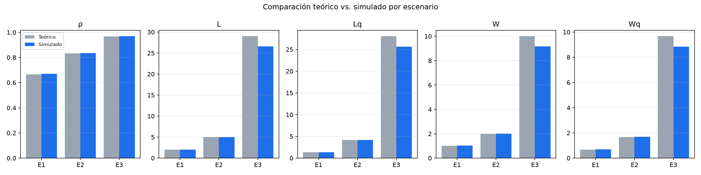
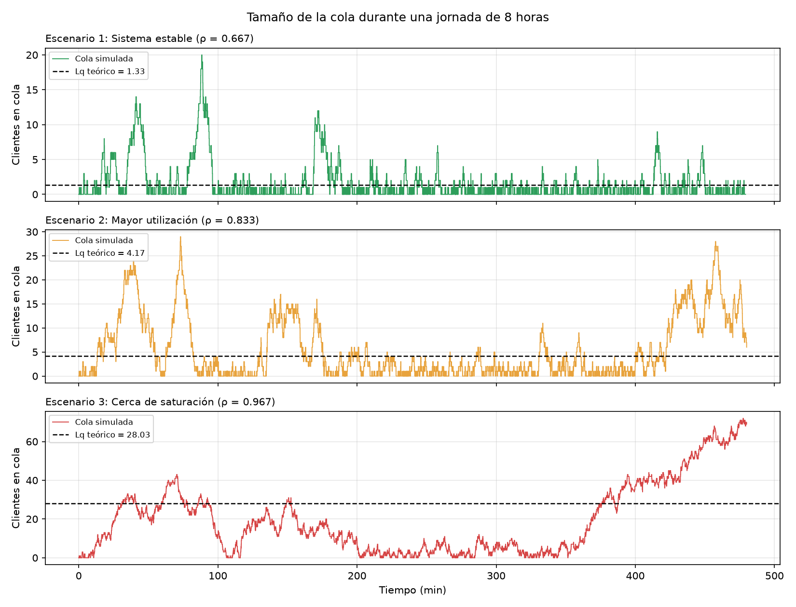
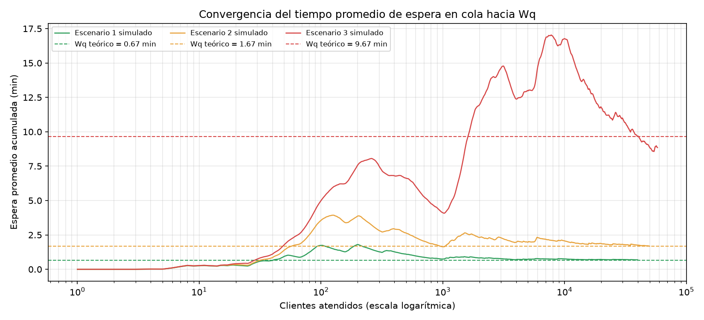
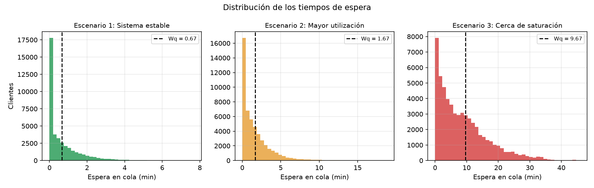
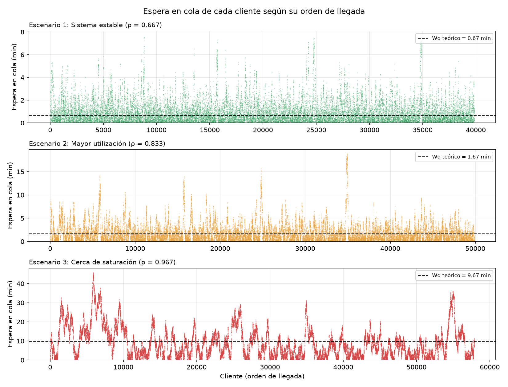
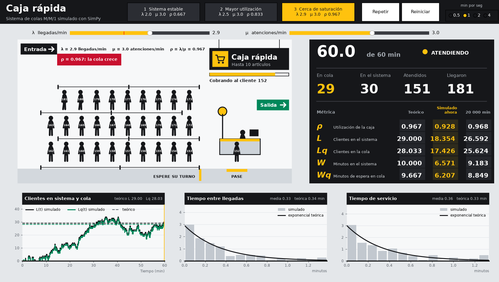

λ
Llegan clientes
En promedio llegan 2 clientes por minuto, pero no en orden: a veces llegan tres juntos y a veces nadie en un buen rato.
λ (lambda) = cuántos clientes llegan por minuto.
Simulamos la fila de una caja de supermercado para ver cuánto esperan los clientes. Esta guía explica, con palabras simples, la teoría, el código y las gráficas.
Cómo usarla. Léela en orden. En cada gráfica, el título es la idea que hay que decir, y abajo está la respuesta a lo que nos pueden preguntar.
En promedio llegan 2 clientes por minuto, pero no en orden: a veces llegan tres juntos y a veces nadie en un buen rato.
λ (lambda) = cuántos clientes llegan por minuto.
La cajera puede atender 3 clientes por minuto. Algunos cobros son rapidísimos y otros tardan más.
μ (mu) = cuántos clientes puede atender la caja por minuto.
ρ = λ ÷ μ dice qué tan ocupada está la caja. Si llegan más clientes de los que se pueden atender (λ ≥ μ), la fila crece para siempre.
La guía del docente escribe μ/λ; lo correcto es λ/μ.
M/M/1 significa: llegadas al azar (M), atención al azar (M) y 1 caja. Probamos 3 casos con la misma cajera (μ = 3): caja tranquila (λ = 2), caja ocupada (λ = 2.5) y caja al límite (λ = 2.9).
Está ocupada 2 de cada 3 minutos.
Contando la fila y al que están cobrando.
Solo las que están esperando.
Desde que llega hasta que se va.
Solo el tiempo parado en la fila (unos 40 segundos).
Personas = llegadas por minuto × minutos que se queda cada una.
Lo importante: casi todas dividen por μ − λ, lo que le "sobra" a la caja. En la caja tranquila sobra 1; en la caja al límite sobra solo 0.1, y por eso el tiempo total pasa de 1 a 10 minutos.
Dice cuánto se espera en promedio, en un tiempo muy largo. No dice qué pasa en un momento concreto del día.
Como los clientes llegan al azar, a veces se juntan. En la caja tranquila la fila tiene 1.33 personas en promedio, pero en un momento llegó a 20.
Comprobar: si el promedio simulado da igual que la fórmula, el programa está bien hecho.
Ver más: picos, rachas y cuántos clientes no esperan nada.
Frase clave: "La fórmula dice cuánto se espera en promedio; la simulación muestra qué pasa minuto a minuto".
Guarda los 3 casos, la duración (20 000 min) y la semilla (42).
Calcula las fórmulas.
Simula la fila cliente por cliente y anota cuándo llega, cuándo lo atienden y cuándo se va.
Con esas horas calcula los promedios simulados.
Muestra la tabla, las 5 gráficas y la ventana animada.
Hace los cálculos y la simulación.
Archivos: config, theory, queue_system, analysis.
Muestra los resultados: tabla, gráficas y ventana. No calcula nada.
Archivos: console_view, chart_view y la carpeta live/.
Lleva los pedidos: pide la simulación al modelo y se la entrega a la vista.
Archivo: simulation_controller.py.
Esta forma de separar el código se llama MVC (modelo, vista, controlador). Además, 25 pruebas automáticas revisan que todo funcione.
Lleva la hora de la simulación (env.now).
capacity=1: atiende a uno a la vez; los demás hacen fila en orden de llegada.
El cliente se queda quieto hasta que la caja se libera o hasta que termina su cobro.
Sortea cada cuánto llega alguien y cuánto dura cada cobro. Se usa 1/λ porque NumPy pide el promedio.
En la caja tranquila y la ocupada, la simulación y la fórmula se diferencian menos de 3 %. Eso prueba que el programa está bien hecho.
Al límite da 8 % menos. No es un error: cuando la caja está casi llena, la simulación tarda muchísimo en llegar al promedio.
Simulando 100 000 minutos la diferencia baja a 4 %. Con otra semilla el resultado queda por encima de la fórmula. Es el azar.

5 mini-gráficas, una por medida. Gris = fórmula. Azul = simulación. E1, E2 y E3 son los 3 casos.
Si la barra gris y la azul tienen la misma altura, la simulación coincide con la fórmula.
En los casos 1 y 2 son casi iguales: el programa está bien. En el caso 3 la azul es un poco más baja.
"¿Por qué el caso 3 da menos?" Al límite tarda mucho en llegar al promedio; con más tiempo se acerca.

Cuántas personas hay en la fila en cada minuto de un día de 8 horas. Un panel por caso. Línea punteada = promedio de la fórmula.
Qué tan altos son los picos y si la fila vuelve a cero.
Tranquila: picos de hasta 20 que se vacían rápido. Ocupada: hasta 29. Al límite: la fila no se vacía y termina con 69.
"¿20 personas con un promedio de 1.33? ¿Está mal?" No: 1.33 es el promedio de todo el tiempo, no el máximo. Hay ratos con 20 y ratos con 0.

Línea continua: la espera promedio de los clientes atendidos hasta ese momento. Punteada del mismo color: la fórmula.
Si al final cada línea continua se junta con su punteada. Abajo se cuenta 1, 10, 100, 1 000… clientes.
Los casos 1 y 2 se juntan. El 3 sube hasta 17 min y termina en 8.85, todavía debajo de 9.67: de ahí sale el 8 %.
"¿Por qué al inicio salta tanto?" Con pocos clientes, uno que espera mucho cambia todo el promedio. Con miles, ya no.

Cada barra cuenta cuántos clientes esperaron cierta cantidad de minutos. Punteada = espera promedio de la fórmula.
La barra más alta está en 0, y después las barras bajan hacia la derecha.
La mayoría espera menos que el promedio. Los pocos que esperan mucho son los que suben el promedio.
"¿Cuántos no esperan nada?" Los que llegan con la caja libre: 33 %, 17 % y 3 %. La simulación da casi lo mismo.

Cada punto es un cliente. De izquierda a derecha: el orden en que llegó. Altura: cuántos minutos esperó.
Puntos sueltos arriba: alguien esperó mucho una vez. "Montañas" de puntos: muchos clientes seguidos esperando mucho.
La espera más larga fue de 7.7, 18.8 y 45.8 minutos. Al límite, hasta 2 636 clientes seguidos esperaron más que el promedio.
"¿Qué tiene que ver con el 8 %?" Esas rachas largas hacen que el promedio tarde en asentarse.

La fila animada, un tablero con los números y 3 gráficas. Con las barras de λ y μ cambias el caso.
Solo redibuja lo que se mueve, no toda la ventana (técnica llamada blitting).
Avisa "Sistema inestable" y la fila crece sin parar.
¿Qué es un M/M/1?
07¿Para qué sirve la semilla?
02¿Qué son λ y μ?
08¿Por qué el caso al límite tiene más diferencia?
03¿Qué es ρ y por qué es λ/μ?
09La fila llegó a 20 y el promedio es 1.33: ¿está mal?
04¿Qué pasa si λ ≥ μ?
10¿Por qué tantos clientes no esperan nada?
05¿Qué diferencia hay entre L y Lq, o entre W y Wq?
11¿Cómo harías que la diferencia sea menor?
06¿Qué hace SimPy en el código?
12¿Qué es MVC en su programa?
Una fila con llegadas al azar, atención al azar y 1 caja. Se atiende en orden de llegada. volver
Para que al correr otra vez salgan los mismos números y cualquiera pueda comprobarlos. volver
λ: clientes que llegan por minuto. μ: clientes que la caja puede atender por minuto. volver
Al límite hay rachas largas de espera y el promedio tarda mucho en asentarse; 20 000 minutos no alcanzan. volver
Qué tan ocupada está la caja: lo que llega ÷ lo que se puede atender. La guía lo escribe al revés. volver
No. 1.33 es el promedio de todo el tiempo, no el máximo. Por el azar hay ratos con 20 y ratos con 0. volver
Llegan más de los que se atienden: la fila crece sin fin y las fórmulas ya no sirven. volver
La caja está libre una parte del tiempo (1 − ρ); quien llega en ese momento pasa directo. volver
L y W cuentan todo (fila + caja). Lq y Wq cuentan solo la fila. volver
Simulando más tiempo, o repitiendo con varias semillas y promediando. volver
Lleva el reloj y la fila: cada cliente espera su turno y lo atienden durante un tiempo al azar. volver
model calcula, view muestra, controller conecta. La ventana nunca simula por su cuenta. volver